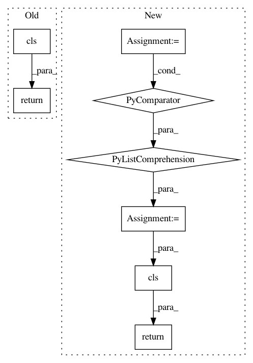

13fc68c1fbc73ba9791863d5976e529133a7786e,src/sagemaker/processing.py,ProcessingJob,from_processing_name,#Any#Any#Any#,635
Before Change
job_desc = sagemaker_session.describe_processing_job(job_name=processing_job_name)
return cls(
sagemaker_session=sagemaker_session,
job_name=processing_job_name,
inputs=[
ProcessingInput(
source=processing_input["S3Input"]["S3Uri"],
destination=processing_input["S3Input"]["LocalPath"],
input_name=processing_input["InputName"],
s3_data_type=processing_input["S3Input"].get("S3DataType"),
s3_input_mode=processing_input["S3Input"].get("S3InputMode"),
s3_data_distribution_type=processing_input["S3Input"].get(
"S3DataDistributionType"
),
s3_compression_type=processing_input["S3Input"].get("S3CompressionType"),
)
for processing_input in job_desc["ProcessingInputs"]
],
outputs=[
ProcessingOutput(
source=job_desc["ProcessingOutputConfig"]["Outputs"][0]["S3Output"][
"LocalPath"
],
destination=job_desc["ProcessingOutputConfig"]["Outputs"][0]["S3Output"][
"S3Uri"
],
output_name=job_desc["ProcessingOutputConfig"]["Outputs"][0]["OutputName"],
)
],
output_kms_key=job_desc["ProcessingOutputConfig"].get("KmsKeyId"),
)
@classmethod
def from_processing_arn(cls, sagemaker_session, processing_job_arn):
Initializes a ``ProcessingJob`` from a Processing ARN.
After Change
if job_desc.get("ProcessingOutputConfig") and job_desc["ProcessingOutputConfig"].get(
"Outputs"
):
outputs = [
ProcessingOutput(
source=processing_output["S3Output"]["LocalPath"],
destination=processing_output["S3Output"]["S3Uri"],
output_name=processing_output["OutputName"],
)
for processing_output in job_desc["ProcessingOutputConfig"]["Outputs"]
]
output_kms_key = None
if job_desc.get("ProcessingOutputConfig"):
output_kms_key = job_desc["ProcessingOutputConfig"].get("KmsKeyId")
return cls(
sagemaker_session=sagemaker_session,
job_name=processing_job_name,
inputs=inputs,
outputs=outputs,
output_kms_key=output_kms_key,
)
@classmethod
def from_processing_arn(cls, sagemaker_session, processing_job_arn):
Initializes a ``ProcessingJob`` from a Processing ARN.
In pattern: SUPERPATTERN
Frequency: 4
Non-data size: 8
Instances
Project Name: aws/sagemaker-python-sdk
Commit Name: 13fc68c1fbc73ba9791863d5976e529133a7786e
Time: 2020-03-10
Author: knakad@amazon.com
File Name: src/sagemaker/processing.py
Class Name: ProcessingJob
Method Name: from_processing_name
Project Name: snipsco/snips-nlu
Commit Name: e97af48c033d53b18ce578b0448bc1f565717ceb
Time: 2018-11-22
Author: adrien.ball@snips.ai
File Name: snips_nlu/dataset/intent.py
Class Name: Intent
Method Name: from_file
Project Name: facebookresearch/pytext
Commit Name: f42c4f0429f6d895ccda7a7dd3212c6005d646b5
Time: 2019-11-20
Author: twild@fb.com
File Name: pytext/trainers/ensemble_trainer.py
Class Name: EnsembleTrainer
Method Name: from_config
Project Name: tensorflow/datasets
Commit Name: 076f53b2b8159bcabb04a83860916637aa60cb86
Time: 2020-12-01
Author: epot@google.com
File Name: tensorflow_datasets/core/splits.py
Class Name: SplitDict
Method Name: from_proto